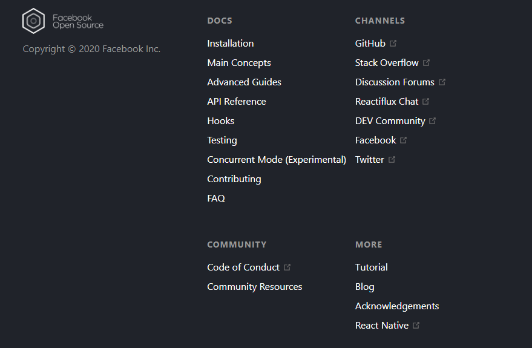

This tutorial doesn’t assume any existing React knowledge.
Before We Start the Tutorial
We will build a small game during this tutorial.
You might be tempted to skip it because you’re not building games — but give it a chance.
The techniques you’ll learn in the tutorial are fundamental to building any React app, and mastering it will give you a deep understanding of React.
TIP
"This tutorial is designed for people who prefer to " learn by doing. " If you prefer learning concepts from the ground up, check out our" step-by-step "You might find this tutorial and the guide complementary to each other."
The tutorial is divided into several sections:
- setup for the tutorial "will give you" a straight point "to follow the tutorial."
- overview "will teach you" the fundamentals "of React: components, props, and state."
- will teach you the most common techniques " in React development."
- will give you a a deeper insight "into the unique strengths of React."
You don’t have to complete all of the sections at once to get the value out of this tutorial. Try to get as far as you can — even if it’s one or two sections.
What Are We Building?
In this tutorial, we’ll show how to build an interactive tic-tac-toe game with React.
You can see what we’ll be building here:
final resultIf the code doesn’t make sense to you, or if you are unfamiliar with the code’s syntax, don’t worry! The goal of this tutorial is to help you understand React and its syntax.
We recommend that you check out the tic-tac-toe game before continuing with the tutorial. One of the features that you’ll notice is that there is a numbered list to the right of the game’s board. This list gives you a history of all of the moves that have occurred in the game, and it is updated as the game progresses.
You can close the tic-tac-toe game once you’re familiar with it. We’ll be starting from a simpler template in this tutorial. Our next step is to set you up so that you can start building the game.
"Prerequisites"
We’ll assume that you have some familiarity with HTML and JavaScript, but you should be able to follow along even if you’re coming from a different programming language. We’ll also assume that you’re familiar with programming concepts like functions, objects, arrays, and to a lesser extent, classes.
"If you need to review JavaScript, we recommend reading" this guide "Note that we’re also using some features from ES6 — a recent version of JavaScript. In this tutorial, we’re using" arrow functions classes let "and" const "statements. You can use the " Babel REPL "to check what ES6 code compiles to."
Setup for the Tutorial
There are two ways to complete this tutorial: you can either write the code in your browser, or you can set up a local development environment on your computer.
"Setup Option 1: Write Code in the Browser"
This is the quickest way to get started!
"First, open this" starter code "in a new tab. The new tab should display an empty tic-tac-toe game board and React code. We will be editing the React code in this tutorial."
"You can now skip the second setup option, and go to the" overview "section to get an overview of React."
"Setup Option 2: Local Development Environment"
This is completely optional and not required for this tutorial!
"Optional: Instructions for following along locally using your preferred text editor "
"This setup requires more work but allows you to complete the tutorial using an editor of your choice. Here are the steps to follow:"
- "Make sure you have a recent version of" Node.js> "installed"
- "Follow the" installation instructions for Create React App "to make a new project."
"npx create-react-app my-app"
-
"Delete all files in the"
src"folder of the new project"
Note:
"Don’t delete the entire "
src" folder, just the original source files inside it." " We’ll replace the default source files with examples for this project in the next step."
cd my-app
cd src
# If you're using a Mac or Linux:
rm -f *
# Or, if you're on Windows:
del *
# Then, switch back to the project folder
cd ..

